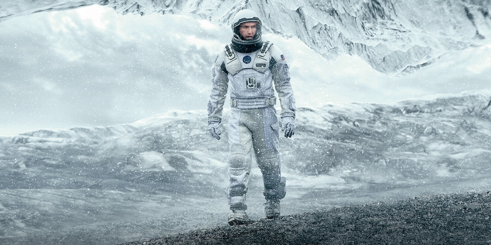
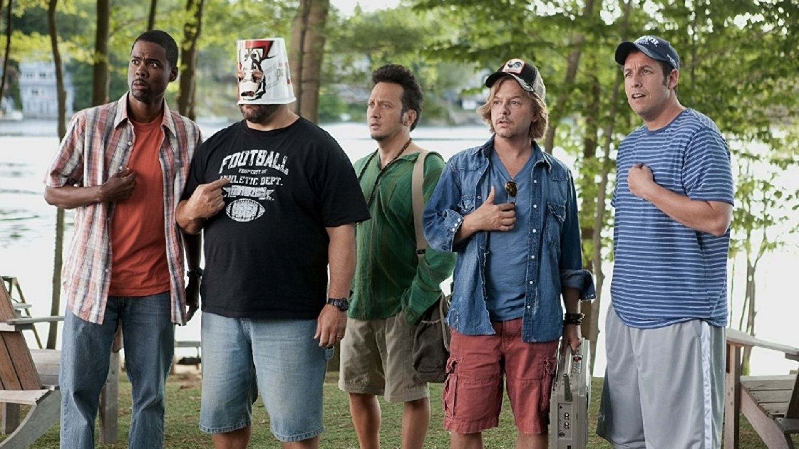
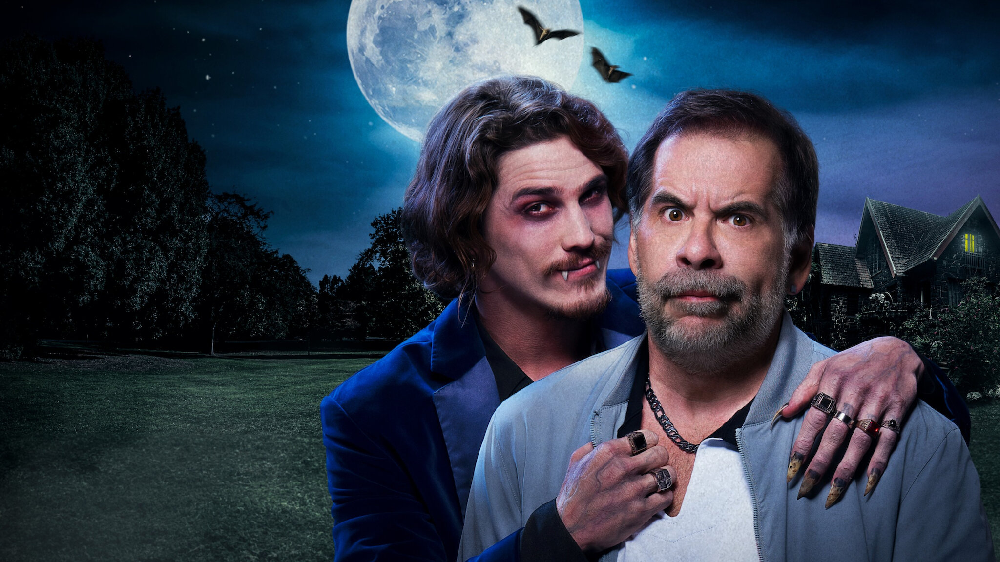

Num futuro próximo, a Terra se tornou um lugar hostil e a humanidade enfrenta a extinção pela fome. Um ex-piloto da NASA que virou fazendeiro é recrutado para uma missão desesperada: viajar através de um buraco de minhoca para encontrar um novo planeta habitável. O problema? O tempo passa de forma diferente do outro lado, e cada hora na missão pode custar décadas na Terra, distanciando-o de seus filhos. É uma corrida contra o tempo e as leis da física para salvar a todos.

Após se mudar de volta para sua cidade natal com a família, Lenny Feder descobre que a vida tranquila que buscava não é bem assim. Ele e seus amigos de infância se reencontram e percebem que, apesar de mais velhos, a imaturidade continua a mesma. O problema? Agora as confusões não acontecem mais em uma casa no lago, mas no meio do dia a dia, envolvendo valentões do passado, festas malucas e os desafios de criar os próprios filhos.

Fernandinho, um ex-jogador de futebol e pai de família medroso, tem sua rotina pacata abalada pela chegada de seu cunhado, o enigmático Greg. Desconfiado dos hábitos noturnos e do jeito estranho do parente, ele começa a acreditar que Greg é um vampiro. O problema? Ninguém da sua família acredita em sua teoria maluca. Sozinho, ele precisa encontrar um jeito de desmascarar o cunhado sanguessuga antes que seja tarde demais.
